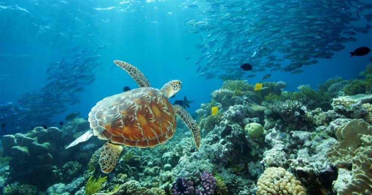
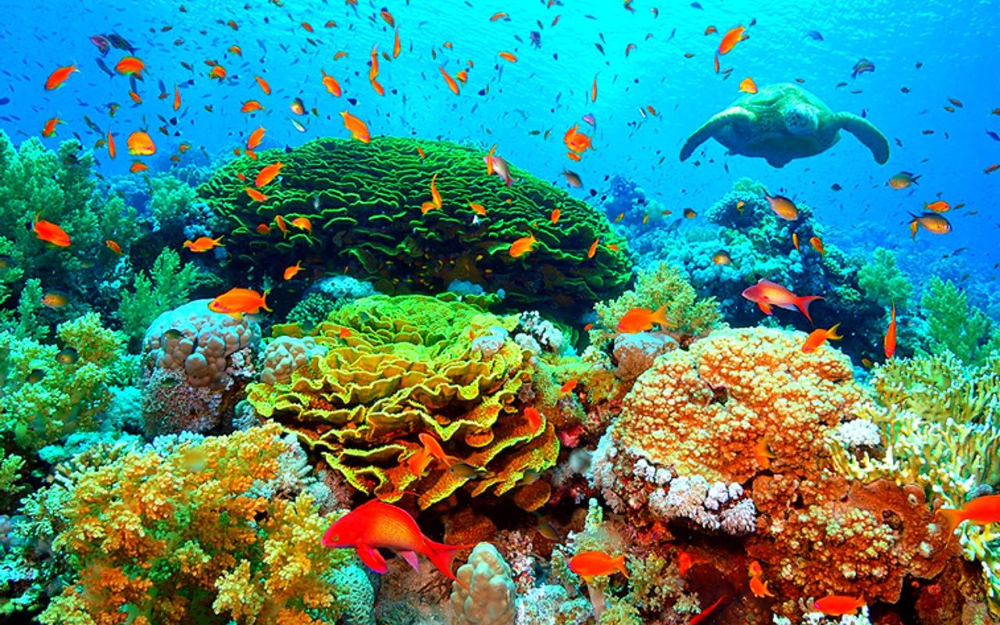

Spanning over 2,300km (1,430mi) down Australia’s eastern coastline, The Great Barrier Reef offers an abundance of coastal experiences unlike anywhere else in the world. Swim amongst the stunning coral formations, giant clams, rare species of whales, and six of the world's seven marine turtle species. Not to mention the over 1,600 species of fish who call this aquatic wonderland home. Whether your style is scuba diving to the depths of the ocean or soaking up the sunshine on the soft sands on an island, see why The Great Barrier Reef is the perfect destination for your next getaway.


The Great Barrier Reef region is home to some of Australia’s top eco-lodges. As well as being unforgettable stays, these lodges are committed to minimising their impact on the natural environment surrounding the reef and protecting the incredible marine life that calls this vast area home, offering you the chance to play a role in reef conservation simply by staying at one.